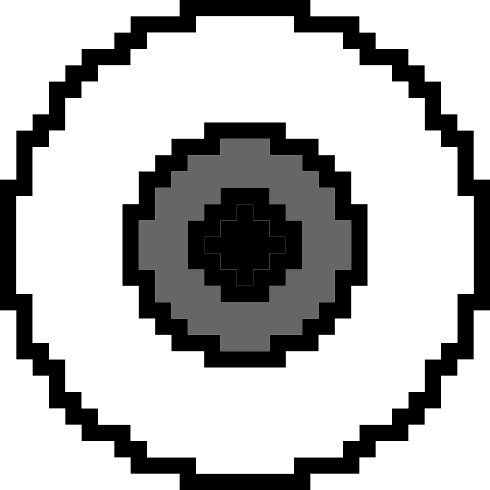
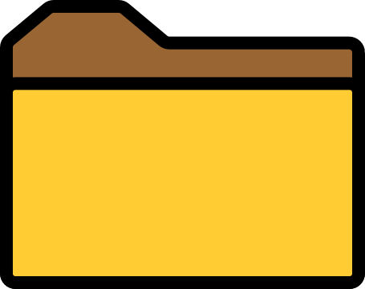
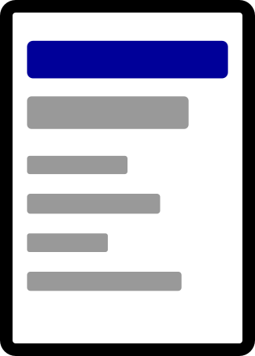
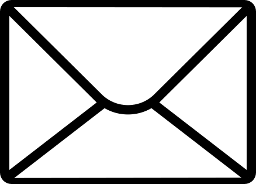

Mi PC
Proyectos
Sobre Mí
ContactoHaz clic en un elemento para ingresar a la sección deseada del portafolio:
• Portafolio de Diseño
• Diseñadore: Camila Ramírez "Estrabismx"
Datos del Diseñador
Selecciona un archivo del directorio para visualizar la información.
Haz clic en una miniatura para visualizarla a gran escala. Doble clic para ampliar.
Diseñadorx interdisciplinar, fan del trabajo artesanal y digital
Diseñadorx de Santiago de Chile, trabajando bajo el seudónimo "Estrabismx". Especialista en la fabricación digital, además del trabajo artesanal y manual. Aprendiendo y capacitandose en el área de la electrónica y la programación.
Mi especialidad se centra en el trabajo modular, optimizando materiales, recursos y tiempos, buscando así la manera más efectiva de llevar a cabo un proyecto. Realizo trabajos no solo enfocado en busqueda de soluciones, además busco la manera de poder experimentar nuevas técnicas, procesos y metodos de conceptualización.
*Estos programas no son los únicos que manejo, solamente los más representativos
Actualizado hasta el: 14 de Julio de 2026
Camila Ramírez P.